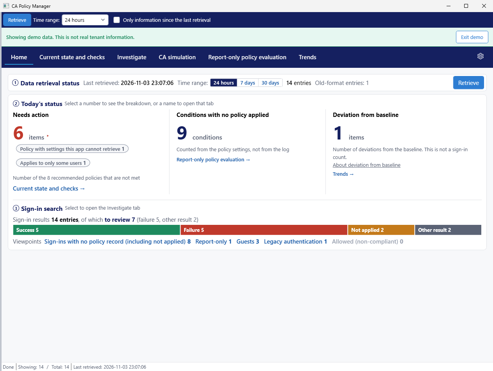
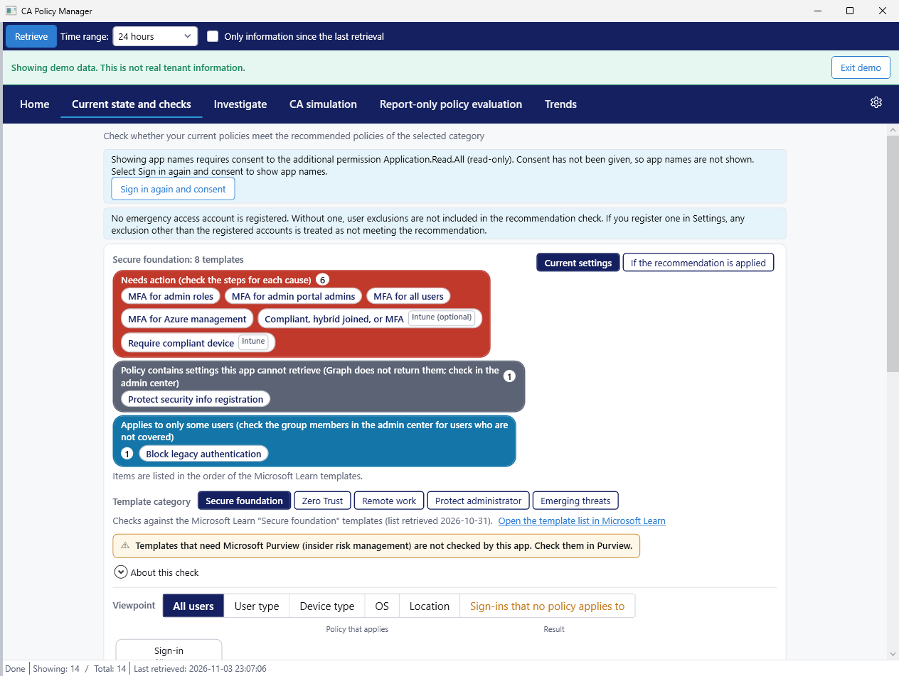

The more policies you have, the harder it is to see where the gaps are. CA Policy Manager reads your sign-in logs and policies and shows you what is not covered. It does not change your tenant.
You add a policy to require MFA for administrator roles, then an exception for one department, and the list keeps growing. Then you check and find that no policy applied to guest sign-ins. Gaps like that are hard to spot by opening policies one at a time.
CA Policy Manager is a Windows app for IT administrators who manage their own organization's Microsoft Entra tenant. It reads sign-in logs and policy definitions from Microsoft Graph and shows which conditions and sign-ins no policy covers.
Home shows three numbers: items that need action, conditions with no policy applied, and deviations from the baseline. Conditions with no policy applied include combinations that no one has signed in with yet.
For sign-ins that did happen, Home shows how many have no policy record. Select the count to open the Investigate tab and review them one at a time.
The app checks your policies against the recommendations in the Microsoft Learn templates, category by category. If a policy you meant to turn on is still in report-only mode, or a policy covers only some users, the app shows the cause and where to check.
The app shows results in a flow diagram. You can switch the view between user type, device type, OS, and location. For policies with settings that Microsoft Graph cannot return, the app directs you to the admin center.
This helps when someone reports they cannot sign in, or when you see access you did not expect. Filter by period, user, app, and result, then select a row to see the reason.
You can also check the groups your policies use. Empty groups, groups that may have been deleted, and policies that do not exclude your emergency access accounts all appear under Policy check on the Investigate tab.
See how sign-in counts change, split into success, failure, interrupted, not applied, and other result. The app compares sudden increases for an app, the failure rate, and time-of-day patterns with the baseline, and shows any deviation.
These features are in the paid edition.
Specify conditions such as user, app, location, and risk to see which policies apply and the result, such as Access blocked, MFA required, or No policy applied: access allowed. You do not need to wait for a real sign-in.
See how results change before you turn a report-only policy on. The app also shows how many fewer conditions would have no policy applied.
Create a report-only policy JSON and a set of steps as text. An administrator applies the change in the admin center.
Export investigation results to CSV and to an HTML report.


No. CA Policy Manager uses read-only permissions. Change proposals in the paid edition are text only, and an administrator decides whether to apply them.
On this PC, in the current Windows user's folder. The app does not send it to the publisher or to any third party. User names and group membership, policy definitions, and connection settings are encrypted. Sign-in records, application display names, and the consent record are not. See Data storage and deletion for details.
AuditLog.Read.All, Policy.Read.All, and User.Read.All are required. Application.Read.All and GroupMember.Read.All are optional; the app uses them to show app names and group members. All five are read-only delegated permissions.
No. The app retrieves interactive sign-ins only.
Not always. They are estimates from the app's own computation, not an official Microsoft evaluation. Before changing a policy, verify in a test environment or in report-only mode.
Last updated: 2026-11-04